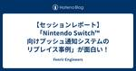
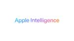

Fenrir Engineers
https://engineers.fenrir-inc.com/
Fenrir Engineers
フィード
KotlinFest 2024に参加しました 1
1
Fenrir Engineers
Kotlin Fest 2024会場 先日開催されたKotlin Fest 2024に参加してきました。今年は5年ぶりのオフライン開催となり、フェンリルからはAndroid、iOSに関わらず9名のエンジニアが参加しました！当日の様子と、気になったセッションをフェンリルのメンバーが紹介していきます。 当日の様子 スポンサーブースの様子 私@cffYoHaはKotlin Fest当日の運営スタッフとして参加し、午前中は受付対応をしていました。1つ目のセッションが終わった時点で既にスタンプラリーをクリアした方もいて「早くノベルティほしい！」という気持ちになりました。Kotlin Festのトリの缶バ…
4日前

【セッションレポート】「Nintendo Switch™ 向けプッシュ通知システムのリプレイス事例」が面白い！ 4
Fenrir Engineers
はじめに こんにちは、バックエンド/インフラ担当の森井です。 先日、NPNS（Nintendo Push Notification Serviceの略？）のリプレイス事例がAWS Summit Japan 2024で公開されました。 NPNSは、Nintendo Switchにおける通知を行うシステムで、iOSにおけるAPNs、AndroidにおけるFCMのようなサービスです。 2018年の資料では今後の展望としてNLBとFargateの導入が挙げられていたので、システムの一部をリプレイスする話かと思いましたが、なんとシステム全体をリプレイスしていました。 2018年の資料も面白かったのですが…
8日前
Control Center Customization について #WWDC24
Fenrir Engineers
はじめに 今回は WWDC24 で発表された新機能 Control Center Customization について調べた内容を簡単にまとめたいと思います また、合わせて簡単なサンプルの実装もしてみようと思います Control Center Customization とは WWDC24 で発表された iOS 18, iPadOS 18 で利用可能になる新機能になります コントロールセンターのレイアウトをユーザーが自由にカスタマイズできるようになりました また、ユーザーはアプリが提供する ControlWidget を以下の３つの箇所で自由に追加することができ、また ControlWidg…
12日前

iOSアプリで利用できるApple Intelligenceの機能について #WWDC24
Fenrir Engineers
iOSエンジニアの谷藤(@penguinsan_pg)です。 WWDC24でApple Intelligenceが発表されました。 Apple IntelligenceとはAppleが独自で開発した人工知能システムです。文章の要約・音声認識・画像生成など、Apple Intelligenceを利用することで、AI技術を活用した便利な機能を数多く実現することができます。 Apple Intelligenceの機能はiOS 18、iPadOS 18、macOS Sequoiaで利用することができ、一部の機能はSDKとして提供されアプリと連携することができます。 そこで、今回はアプリに組み込むことが…
13日前
トランザクションとはなにか？
Fenrir Engineers
こんにちは！ Web バックエンド担当の小山です。 「Web エンジニアなら知っておきたい」ということで、今日は 「トランザクション」 についてです。 トランザクション とは データベースにおいて、一連のデータ操作を１つのまとまりにして取り扱う仕組みです。 これにより、相互依存のある複数の操作が全て完了するか・全てキャンセルされることを保証しデータベースの整合性と一貫性を保つことができます。 トランザクションには 「ACID特性」 と呼ばれる4つの性質があります。 「ACID特性」とは トランザクション処理が満たすべき性質として、ACID特性があります。以下、4つの性質があります。 Atomi…
14日前

HTMLタグはそのタグにどのような目的や役割があるのかを意識して書きましょう
Fenrir Engineers
webエンジニアの村田です。 突然ですがみなさん、このような経験はありませんか？ リンクを新しいタブで開こうと思い、右クリックをしても「新しいタブで開く」メニューが表示されなかった 既存のHTMLを編集する際、divタグばかりで構成されていて読みづらい 作成したwebページが、ブラウザでの検索結果の上部に表示されづらい このような問題は、HTMLのタグをその意味するものや役割通りに使うことよって解決されることがあります。 例として、今回はaタグを元に説明します。 a タグとは a タグは、HTMLのアンカー要素です。 href属性を用いて別のウェブページ、ファイル、メールアドレス、同一ページ内…
21日前
Webエンジニアなら知っておきたいルーティングの基本
Fenrir Engineers
インフラ担当の柴田です。 「Web エンジニアなら知っておきたい」ということで、今日はルーティングについて紹介したいと思います。 例えばAWSのEC2でサービスを立ち上げて、Security groupを設定したのにつながらない。Dockerで立ち上げたサービスにつながらないという経験はありませんか？ その原因はもしかするとルーティングにあるかもしれません。今日はルーティングの基礎の基礎をご紹介します。 ルーティングとは？ ルーティングはネットワーク間でデータを転送するための仕組みです。各デバイスがどのようにデータを異なるデバイスに転送するのかがプロトコルによって決まっており、それに従ってデー…
1ヶ月前
AWS GameDay ~Multi-Region Disaster Recovery~に参加しました
Fenrir Engineers
インフラ担当の柴田です。 4月26日に行われたAWS GameDay ~Multi-Region Disaster Recovery~に参加しました。 今回は1人で行うGameDayで良い成績を出すのは難しいと思っていたのですが、優勝できたので感想を書いてみようと思います。 チーム名を雑につけなくて良かったなと思いました。 AWS GameDay ~Multi-Region Disaster Recovery~ (ソロ) AWSではAWS GameDayというイベントを定期的に開催しています。 今回のGameDayは、2023年にAWS Top Engineers、Ambassadors、Jr…
2ヶ月前
AWS re:Postを活用した学習のすすめ
Fenrir Engineers
インフラ担当の柴田です。 最近、AWSの勉強の一環でAWS re:Postの質問に回答していましたが、思ったより楽しく役に立ったので、皆さんにおすすめしたいと思いブログを書きました。 AWS re:Postとは AWS re:Postは、AWSが管理するコミュニティベースのQ＆Aサイトです。AWSフォーラムの後継として登場しました(参考：AWS re:Post – AWS コミュニティのために再考された Q&A サービス)。 最近ではAWSのドキュメントでもAWS re:Postへの誘導がされており、今後ますます情報が充実してくると思います。 AWS re:PostはコミュニティベースのQ&A…
2ヶ月前
フロントエンドの E2E テストを書いてみた
Fenrir Engineers
はじめに フロントエンドの実装コードが複雑化している中で、フロントエンドでのテストコードはとても重要視されていると思います。そんなフロントエンドのテスト種別の中の E2E テストについて、どのような目的で導入され、どのようなメリットがあるのか知りたかったため今回調査を行いました。E2E テストにあまり触れたことのないフロントエンドエンジニアの方に向けて、その内容を共有できればと思います。 E2E テストとは？ E2E ( End to End ) テストは 、一言で表すなら「実際のブラウザ上でユーザーと同じように操作し行うテスト」のことです。 フロントエンドにおける E2E テストは、E2E …
2ヶ月前
try! Swift Tokyo 2024に参加しました！ #tryswift
Fenrir Engineers
こんにちは！ iOSエンジニアの谷藤(@penguinsan_pg)です。 先日開催された try! Swift Tokyo 2024 に、フェンリルからは9人のiOSエンジニアが参加しました。私は今までにiOSDCなどのカンファレンスには何度か参加したことがありましたが、try! Swiftへの参加は今回が初めてでした。 初めてtry! Swift Tokyoに参加して感じた率直な感想や、印象に残ったセッションについて紹介したいと思います。 try! Swift のグローバルな雰囲気 会場について最初に感じたことは、「海外の人がとても多いな！」ということでした。過去にiOSDCやDroid …
2ヶ月前
DB の INDEX を使おう！
Fenrir Engineers
こんにちは！ Web バックエンド担当の松村です。 DB に触れる中で「聞いたことはある」「なんとなく使ったことあるけどよく分からない」となりそうな INDEX について使い方を紹介します。 INDEX とは？ DB における INDEX とは、テーブルへの検索を高速化するために参照される仕組みです。 INDEX がない場合、テーブルへの検索は先頭行から全てレコードを読み取ります(フルスキャン)が、INDEX を参照すればテーブル全体を検索せずに対象レコードの位置を特定(インデックススキャン)することができます。 INDEX は索引と訳せますが、言葉の通り、本の索引や目次をイメージすると良いで…
3ヶ月前
Web エンジニアなら知っておきたい重ね合わせコンテキスト
Fenrir Engineers
こんにちは。フロントエンド担当の水野です。 「Web エンジニアなら知っておきたい」シリーズということで、今回は「重ね合わせコンテキスト」についてのお話をしていこうと思います。 今までのシリーズ記事と比べるとかなりニッチなところを扱うことになりますが、Web フロントエンド開発に避けては通れないと考えているので、お付き合いいただければと思います。 重ね合わせコンテキストとは？ みなさまは CSS の z-index プロパティで HTML 要素の重なりをコントロールしようとした経験はありますか？ ダイアログやポップアップなど、他の要素よりも手前に表示させたい UI を実装するために必要なプロパ…
4ヶ月前
Webエンジニアなら知っておきたいOpenAPI Specificationの基礎
Fenrir Engineers
インフラ担当の柴田です。「Web エンジニアなら知っておきたい」ということで、今日はOpenAPI Specification の主要な構成要素、データ型、制約について紹介します。 OpenAPI Specificationとは？ OpenAPI Specification（OAS）*1は、HTTP APIのインタフェースを定義するための仕様で広く採用されています*2。OASに則ってAPIのインタフェースを記述することにより、人間とコンピュータ双方がAPIの利用方法を理解できます。 現在はOpenAPI Initiativeという組織で管理、推進されています。 OpenAPI Document…
5ヶ月前
Rainが生成AIによるCloudFormationテンプレート生成をサポートしました！
Fenrir Engineers
こんにちは、自称Rainアンバサダーの森井です。 RainがClaude 2を使用したCloudFormationテンプレート生成をサポートしましたのでご紹介します。 はじめに 先日、何気なくCloudFormationのDiscordを覗いていたらRainのリリースアナウンスを見つけました。 github.com Amazon BedrockのClaude2を使用してCloudFormationテンプレートを作成できるとのこと。 普段からRainのリポジトリはチェックしているのですが、見逃していました。 CLIツールで簡単な要望だけ書けばテンプレートが生成されるので、手軽で良いですね。 もち…
5ヶ月前
DOMや仮想DOMについてざっくり知る
Fenrir Engineers
『DOM…？HTMLで使用するタグのことじゃないの？』 『仮想DOM？JavaScriptでいい感じにHTMLタグを操作してくれるものじゃない？知らんけど』 DOMとは何なのか。分かってそうで、実はちゃんと説明できないという方はいませんか？ かつての私もそうでした。ここで改めてまとめようと思います。 DOM（Document Object Model）とは何なのか。 JavaScriptでHTMLを操作する仕組みのこと。 HTMLを操作するための手段（インターフェース）を提供しています。 なぜDOMが必要なの？ Webページを作成するとき、HTMLを使用してコンテンツを作成します。 しかし、H…
6ヶ月前
【AWS re:Invent2023】 AZ障害対策ができる新機能「zonal autoshift」の紹介
Fenrir Engineers
GIMLEチームの三﨑です。 2023年の11月27日から12月2日にわたって開催されたAWS re:Invent 2023に、初参加・初現地参加しました。 Re:Inventでのアップデートで、Amazon Route 53 Application Recovery Controllerの新機能「zonal autoshift」が発表されました。 本記事では、zonal autoshiftの機能の紹介と、Availability Zoneの障害対策として以前から使用されているzonal shiftとの使い分けについて紹介します。 zonal autoshiftとは Availability …
6ヶ月前
【AWS re:Invent2023】 新しくリリースされたGuardDuty ECS Runtime Monitoringの紹介
Fenrir Engineers
これは フェンリル デザインとテクノロジー Advent Calendar 2023 22日目の記事です。 こんにちは！ インフラ担当の米田です。 2023年の11月27日から12月2日にわたって開催されたAWS re:Invent 2023に、初めて現地参加しました。 数あるセッションの中から "Introducing GuardDuty ECS Runtime Monitoring, including AWS Fargate" で学んだ内容を紹介します。 セッションの紹介 今回紹介するセッションの内容について、簡単に説明します。 re:Invent2023開始直前の11月26日に発表され…
6ヶ月前
会社のブログに駄文を公開する技術あるいは自分を説得する技術
Fenrir Engineers
これは フェンリル デザインとテクノロジー Advent Calendar 2023 24日目の記事です。 インフラ担当の柴田です。Advent Calendarを書くと決めたのに延々とネタが決まりません。そこで、このような駄文を会社のブログに書くに至った思考の話をします。 なぜネタが決まらないのか そもそも、なぜネタが決まらないのでしょうか。11月の時点でAWSについて書こうと考えていましたが、1か月以上経つのに何も決まらない理由を考えてみました。 11月の時点でネタがないっと言っていました 「ネタがない」はよく聞く話 話すネタがないというのは同僚からもよく聞きます。しかし、私からするとそう…
6ヶ月前
テクノロジーだけじゃないre:Invent 2023 - Amazonのイノベーション文化
Fenrir Engineers
本記事は「Japan AWS Ambassadors Advent Calendar 2023」の23日目の記事です。 インフラ担当の柴田です。昨日の木澤さんの「Amazon CloudFront KeyValueStoreを活用した記事のリリース制御」はもう読みましたか？CloudFront Functions+KeyValue StoreとLambda@Edgeの使い分けポイントなどが分かりやすくまとまっていておすすめです。 さて、皆さん今年のre:Inventはいかがでしたか。気になるサービスはありましたか。Amazon QやAmazon Bedrockのような生成AIでしょうか。私はP…
6ヶ月前
ゲームデザインを加速させる、Unreal Engineの"型"
Fenrir Engineers
これは フェンリル デザインとテクノロジー Advent Calendar 2023 18日目の記事です。 こんにちは！ GIMLE チームの太田です。 今回はアドベントカレンダーということで、数ヶ月前に趣味で始めたUnreal Engineについて書きます。 取り上げるのは「Gameplay Framework」です！ Unreal Engineには、Gameplay Frameworkと呼ばれる型があり、ゲームの基本的な要素を構成するクラスやコンポーネントをまとめた総称として使われています。 このフレームワークは、ネットワークを通じたマルチプレイヤーゲームが想定されていますが、オフラインで…
6ヶ月前
AWSのOSSにコントリビュートするまでの道のり
Fenrir Engineers
これは フェンリル デザインとテクノロジー Advent Calendar 2023 13日目の記事です。 はじめに インフラ／バックエンドを担当している森井です。 最近、AWSが公開しているOSSに初コントリビュートすることができたので、そこに至るまでの道のりをご紹介しようと思います。 OSS開発への憧れ そもそもOSSとは何でしょうか。少し定義が難しいのでWikipediaを引用します。 オープンソースソフトウェア（英: Open Source Software、略称: OSS）とは、利用者の目的を問わずソースコードを使用、調査、再利用、修正、拡張、再配布が可能なソフトウェアの総称である。…
7ヶ月前
【AWS re:invent2023】パクのセッション振り返り_その２
Fenrir Engineers
バックエンド/インフラ担当のパクです。 前回の記事ではS3管理に関するセッションについて振り返りました。 今回は、AWSの代表的なコンテナサービスであるFargateを取り上げたセッションに焦点を当て、振り返りたいと思います。 AWS Fargate or Amazon EC2:Which launch type should be using? このセッションでは、Amazon Elastic Container Service (ECS) と Amazon Elastic Kubernetes Service (EKS) の両方で動作する、コンテナのためのサーバーレスコンピューティングエン…
7ヶ月前
【AWS re:invent2023】パクのセッション振り返り_その１
Fenrir Engineers
バックエンド/インフラ担当のパクです。 先日、アメリカのレスベカスで開催されたAWS re:invent 2023に現地参加してきました。 個人的には初めてのアメリカ、初めてのre:Inventだったため、驚きの連続でした！ 滅多にないre:Invent現地参加ですので、参加したセッションの内容を振り返り、まとめたいと思います。 How Netflix saved millions in Amazon S3 costs using S3 Storage Lens あらゆる場所からのあらゆる量のデータを保存および取得するために構築されたオブジェクトストレージサービス、S3はストレージを使用した分…
7ヶ月前
REST API を知る
Fenrir Engineers
こんにちは。バックエンド担当の谷口です。 みなさまは Web API を設計するとき、どのようなことを考えていますか？一度、API を公開し開発が進むと、そこからのインターフェースの変更は容易には出来ません。開発を円滑に進めるためにも、よく知られている思想に則って設計したいものです。この記事では、Web API の分野で最も浸透しているであろう設計原則の REST を紹介します。 この記事は「Web エンジニアなら知っておきたい」シリーズの 3 回目の投稿です。 前回の記事はこちら。 engineers.fenrir-inc.com REST とは？ REST の設計原則 原則 1: ステート…
7ヶ月前
AWS DeepRacerで使用した報酬関数実装パターンの紹介
Fenrir Engineers
これは フェンリル デザインとテクノロジー Advent Calendar 2023 4日目の記事です。 はじめに インフラエンジニアの三﨑です。 先日、AWS Jr.ChampionによるDeepRacerの大会に参加しました。 DeepRacerを体験したのは今回が初めてです。 本記事では、その大会に向けて学習モデルを作成し、試行錯誤しながら活用した報酬関数をご紹介します。 <Jr.Championについては下記ページをご覧ください> https://www.wantedly.com/companies/fenrir/post_articles/509397 前提 コースやアクション、ハイ…
7ヶ月前
Direct Conectについて考えてみた
Fenrir Engineers
インフラ担当の柴田です。先日AWSの大阪オフィスでDirect Conect（DX）のハンズオンを体験してきました。 普段なかなか触れることのないDXについて学べる機会ということで楽しみにしていました。 しかし、実際にハンズオンをしてみると、スムーズにハンズオンができるように準備された状態だとSite to Site VPNの設定とあまり変わらないなという印象でした。 今回は、ハンズオンをきっかけにDXについて少し考えたことを書いてみようと思います。 Direct Conect ＝ 専用線接続？ DXといえば「専用線によるプライベートな接続」というイメージがありますが、実はAWSは「専用接続」…
7ヶ月前
木村の Google Cloud Next Tokyo '23 1 日目: 生成 AI 向け MLOps について考える
Fenrir Engineers
こんにちは！GIMLE チームの木村です。 11/15 から 2 日間、東京ビッグサイトにて「Google Cloud Next Tokyo '23」が開催されています。私も 2 日間現地参加しており、Google Cloud の知見を増やす機会としています。 去年度から引き続き AI に関する領域を担当しているため、今回も機械学習や生成系 AI に関するセッションをメインに参加してきました。 本日は、「生成 AI 時代の MLOps 実現方法とは」というセッションの内容を受けて、今後どのような点に注力して MLOps を実現できるインフラデザインを作ればよいかという点について紹介します。 従…
8ヶ月前
CDNを活用しよう！
Fenrir Engineers
こんにちは。インフラ/バックエンド担当の森井です。 皆さんは普段からCDNを活用していますか？ CDNという技術は有名ですが、きちんと勉強する機会はあまり多くないのではないでしょうか。 この記事では、フロントエンド/バックエンド/インフラ全ての領域で意識する必要があるシステム設計の重要技術、CDNについて解説します。 この記事は「Web エンジニアなら知っておきたい」というシリーズの2回目の投稿です。 前回の記事はこちら。 engineers.fenrir-inc.com CDNとは？ CDNは、Contents Delivery Network（コンテンツ配信ネットワーク）の略称です。 CD…
8ヶ月前
iOSDC Japan 2023 参加レポ（「CoreHaptics入門」のセッション紹介）
Fenrir Engineers
はじめに iOSエンジニアの名原です。 9月1日から9月3日の3日間で開催されたiOSDC2023に、オンラインで参加しました。 たくさん興味深いテーマがありましたが、今回は特に印象に残ったテーマCoreHapticsについて、自分でもサンプルを作ってみたので紹介したいと思います。 登壇者様の発表 CoreHaptics入門 Haptics(ハプティクス)とは、振動で”触覚”を人工的に作り出し、疑似的に再現する技術のことで、スマホのボタンをタップした時に端末が「ププッ」と振動したりするアレです。 この発表では、CoreHapticsの使い方と設定できるパラメータ、効果的な使い方について説明があ…
8ヶ月前